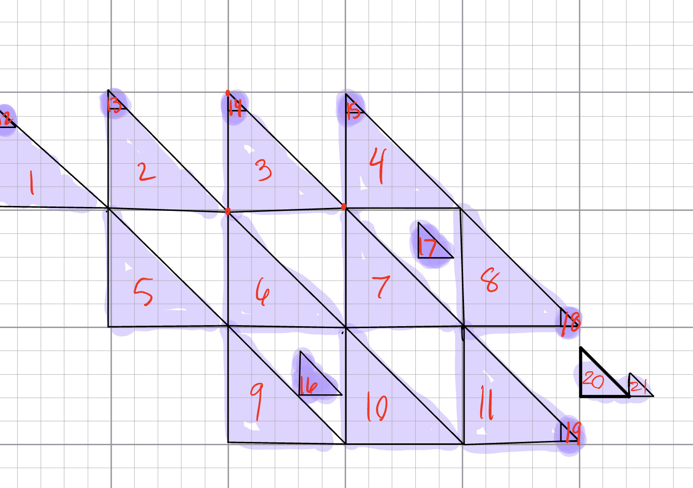

[Aleiah Txzintzun] [atzintzu@ucsc.edu]
Notes to Grader: [I am a bit confused about the colors. When you first load up the page and slide red for example, the color remains white because the color is automatically set to [1.0,1.0,1.0,1.0], and red is set to 1 while blue and green are not 1 and still not set to be 0.0. I didn't infere with this but I hope it's correct.]
 Big Fish eats little fish
Red
Green
Blue
Size